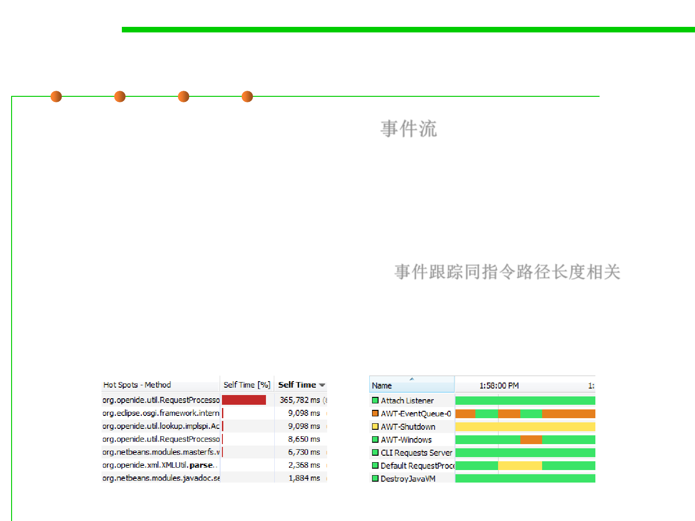
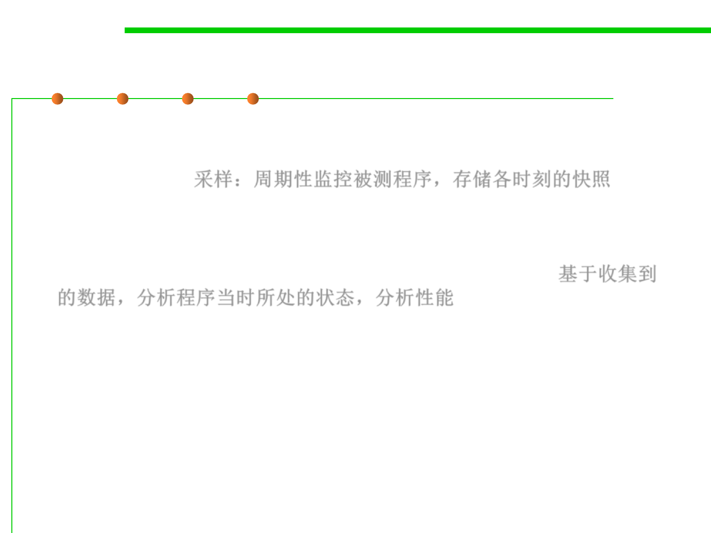
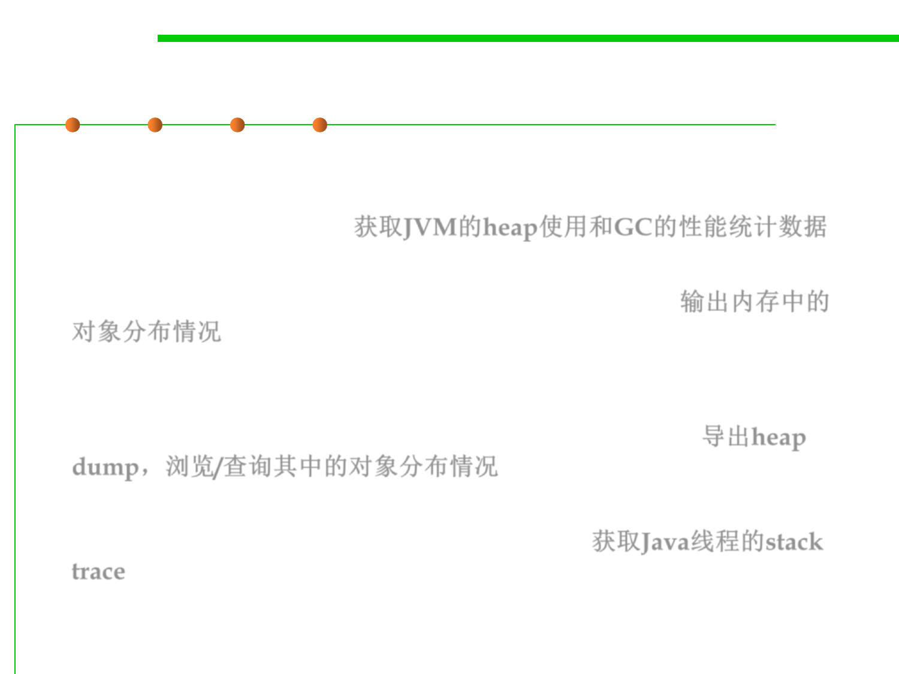
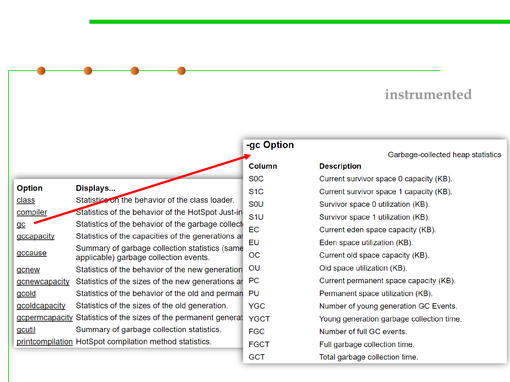
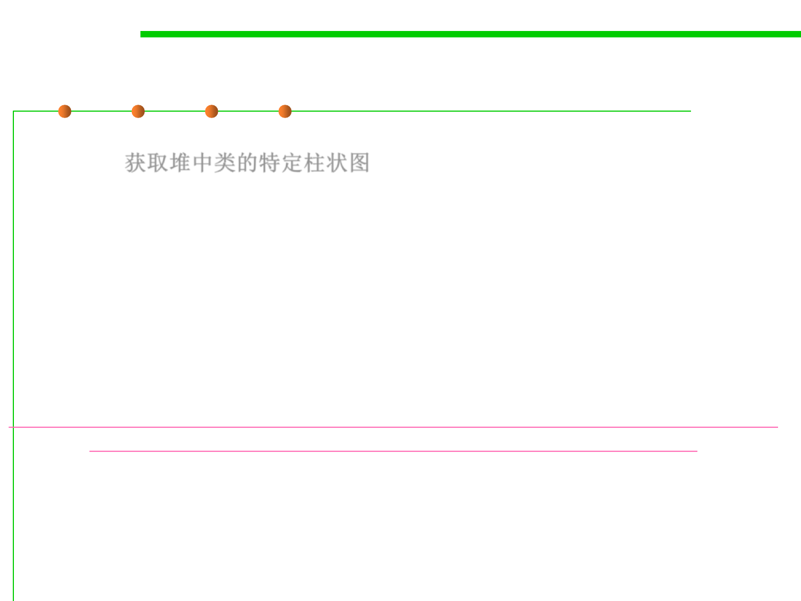
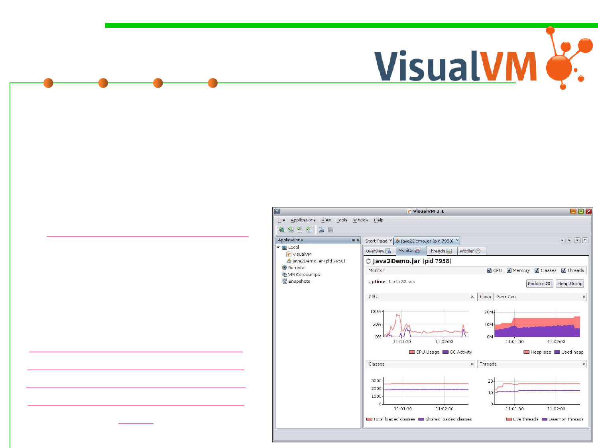
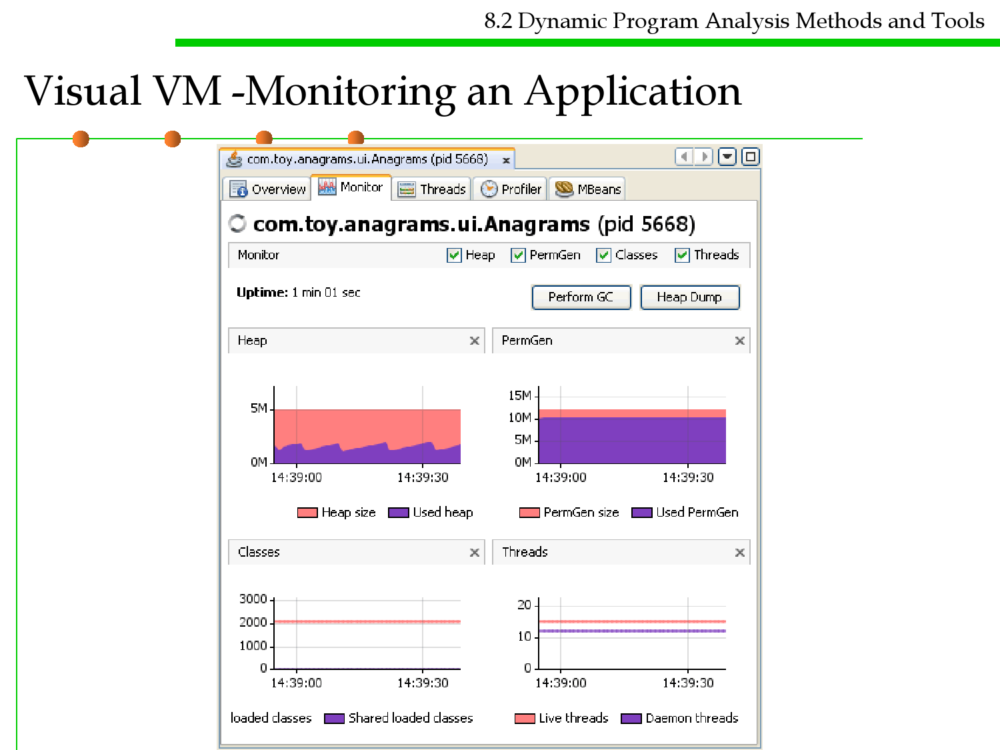
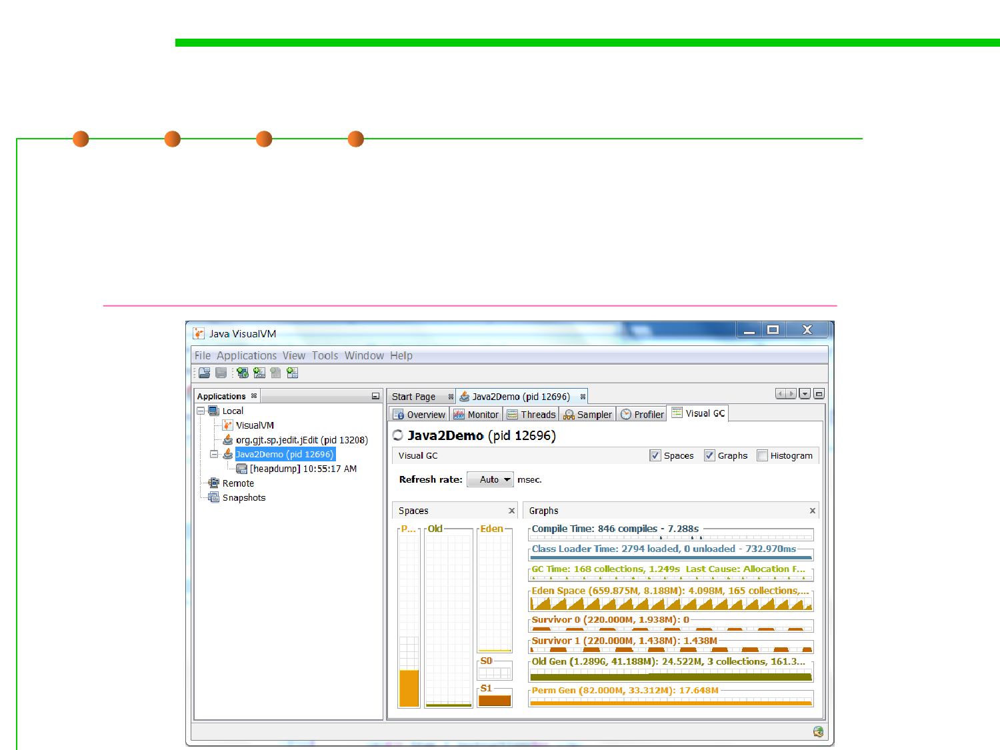
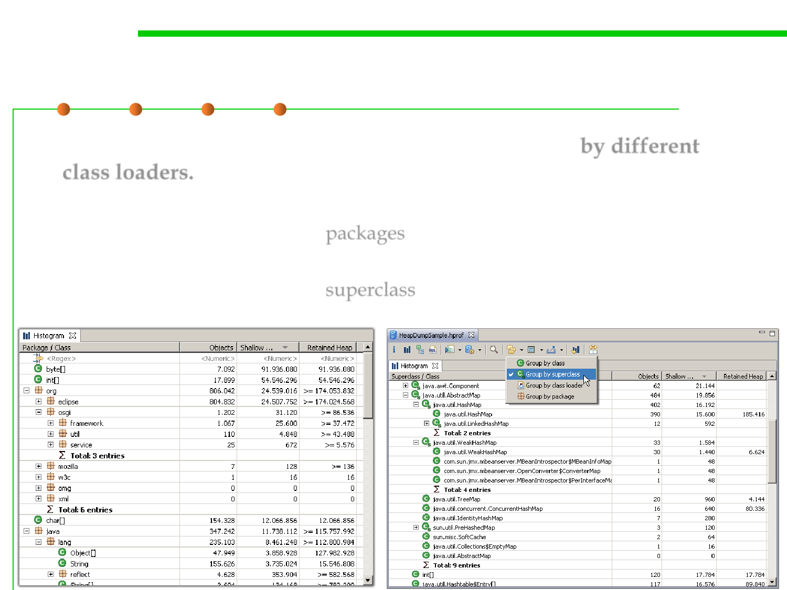
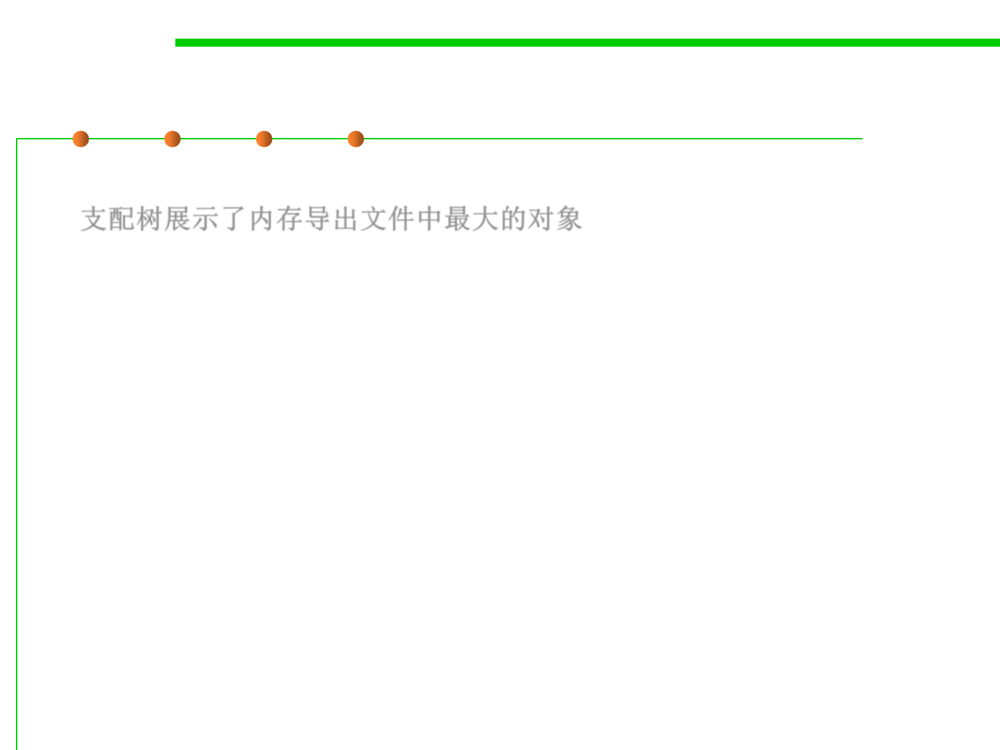

微信公众号[深容Pubmed文献检索] 1. 此处右键：选菜单【翻成中文（简体）】 2. 翻译后，此处右键：选菜单【打印...】成PDF格式
建议屏幕分辨率：1920X1080；如果屏幕太小，可以按Ctrl + 或 Ctrl -缩放网页。

Software Construction
Chapter 8: Software Construction for
Performance
8.2 Dynamic Program Analysis
Methods and Tools
Xu Hanchuan
xhc@hit.edu.cn
May 14, 2019
Outline
8.2 Dynamic Program Analysis Methods and Tools
▪ Dynamic Program Analysis
▪ Program Profiling: Concepts and Approaches
– Profiler
– Profiling Approaches: instrumentation, sampling, instrumented VM
▪ Program Profiling Tools in Java
– Command-line profiling tools: jhat, jmap, jstat, jstack
– JConsole
– Visual VM
– Memory Analyzer (MAT)
▪ Summary
8-1重点学习了memory performance和I/O
performance
本节：如何利用工具对运行的程序性能进行动
态监控，以发现性能瓶颈，并试图加以消除

Software Construction
1 Dynamic Program Analysis

8.2 Dynamic Program Analysis Methods and Tools
Dynamic Program Analysis
▪ Dynamic analysis is the investigation of the properties of a
running software system over one or more executions. 动态程序分
析：根据程序的一次或多次执行的过程与结果，分析代码在时空性能
方面所展现出的性质
▪ What is the meaning of “run”?
– Abstract interpretation and static analysis “run” a program over an
abstract domain
OUT=F(IN,s)
– Dynamic analysis abstraction used in parallel with, not in place of,
concrete values
OUT=F(IN,si,v)

8.2 Dynamic Program Analysis Methods and Tools
Static vs Dynamic Analysis
Static
Analysis
Dynamic
Analysis

8.2 Dynamic Program Analysis Methods and Tools
Dynamic Program Analysis
▪ For dynamic program analysis to be effective, the target program
must be executed with sufficient test inputs to produce interesting
behavior. 为使动态分析有效，目标程序必须执行足够多次，以观察
到完整的、不同的执行行为。
▪ Use of software testing measures such as code coverage helps ensure
that an adequate slice of the program‘s set of possible behaviors has
been observed. 通过分析代码覆盖度，确认动态分析是否已经足够。
▪ Also, care must be taken to minimize the effect that instrumentation
has on the execution (including temporal properties) of the target
program. 要尽可能小的影响程序原本的执行，否则性能测量不准确
。
Uncertainty principle
测量某事物的行为将会不可避免的干扰
量子力学中的测不准原理
/扰乱它，从而改变它的状态

8.2 Dynamic Program Analysis Methods and Tools
Example 1: Program Hot Spots 程序热点
▪ How frequently does each program entity execute? 每个程序实体
（语句、分支、路径、方法等）的执行概率/频度是多少？
– Procedures, methods, statements, branches, paths
– By statistics on multiple executions of the program
▪ 80-20 rule
– 20% of program responsible for 80% of execution time
▪ Objectives:
– Applications Performance tuning 性能调优
– Profile-driven compilation 性能分析驱动的编译
– Reverse engineering 逆向工程
8.2 Dynamic Program Analysis Methods and Tools
Example 2: Path profiling 路径分析
▪ How often does a control-flow path execute?

Software Construction
2 Program Profiling: Concepts and
Approaches

Profiler 分析器
8.2 Dynamic Program Analysis Methods and Tools
▪ Profiling is achieved by instrumenting either the program source
code or its binary executable form using a tool called a profiler (or
code profiler). 利用分析器检测源代码或执行程序以获取信息
– Use information collected during the actual execution of a program
– Can be used on programs that are too large or too complex to analyze by
reading the source 用于代码过于庞大而难以阅读分析的情况
▪ Profilers are extremely important for understanding program
behavior:
– Computer architects need such tools to evaluate how well programs will
perform on new architectures. 新架构上的表现
– Software writers need tools to analyze their programs and identify critical
sections of code. 发现代码的关键区域
– Compiler writers often use such tools to find out how well their
instruction scheduling or branch prediction algorithm is performing. 指令
调度或分支预测算法的执行情况
Outputs of Profiler
8.2 Dynamic Program Analysis Methods and Tools
▪ A statistical summary of the events observed (a profile) 所观察到的
程序执行事件的统计结果
– Summary profile information is often shown annotated against the source
code statements where the events occur, so the size of measurement data
is linear to the code size of the program. 同代码量相关
If (x==100)
x++;
else
x--;
0001
0001
0002

Outputs of Profiler
8.2 Dynamic Program Analysis Methods and Tools
▪ A stream of recorded events (a trace) 事件流
– For sequential programs, a summary profile is usually sufficient, but
performance problems in parallel programs (waiting for messages or
synchronization issues) often depend on the time relationship of events,
thus requiring a full trace to get an understanding of what is happening.
– The size of a (full) trace is linear to the program‘s instruction path
length, making it somewhat impractical. 事件跟踪同指令路径长度相关
– A trace may therefore be initiated at one point in a program and
terminated at another point to limit the output.
Outputs of Profiler
8.2 Dynamic Program Analysis Methods and Tools
▪ An ongoing interaction with the hypervisor (continuous or
periodic monitoring via on-screen display for instance) 实时或周期
性的获取/展示程序运行过程中的数据
– This provides the opportunity to switch a trace on or off at any desired
point during execution in addition to viewing on-going metrics about the
(still executing) program. 提供了在执行期间在任何期望的点处开启或关闭
trace的机会
– It also provides the opportunity to suspend asynchronous processes at
critical points to examine interactions with other parallel processes in
more detail. 提供了在关键点暂停异步进程以更详细地检查与其他并行进程
的交互

8.2 Dynamic Program Analysis Methods and Tools
Profiler types based on output
▪ Flat profiler
– Flat profilers compute the average call times, from the calls, and do not
break down the call times based on the callee or the context. 调用次数
▪ Call-graph profiler
– Call graph profilers show the call times, and frequencies of the functions,
and also the call-chains involved based on the callee. In some tools full
context is not preserved. 调用关系
▪ Input-sensitive profiler
– Input-sensitive profilers add a further dimension to flat or call-graph
profilers by relating performance measures to features of the input
workloads, such as input size or input values. They generate charts that
characterize how an application‘s performance scales as a function of its
input. 输入敏感性分析

Software Construction
2.2 Profiling Approaches

8.2 Dynamic Program Analysis Methods and Tools
Profiling Techniques Overview
▪ Profilers may use a number of different techniques, such as event-
based, statistical, instrumented, and simulation methods.
▪ Profilers use a wide variety of techniques to collect data, including:
– Hardware interrupts
– Code instrumentation
– Instruction set simulation
– Operating system hooks
– Performance counters
8.2 Dynamic Program Analysis Methods and Tools
Profiling Techniques Overview
▪ Profilers mainly use one of three techniques for profiling
programs:
– Insertion/Instrumentation: code added to original program, ideally does
not affect semantics of program, and does affect the running time of a
program 代码注入/代码插入：在原始程序中加入某些语句来收集运行时数
据，这些语句不改变原程序的语义，但对原程序的性能有了轻微改变
– Sampling: observation of behavior 采样：以特定的频率观察程序执行在特
定时刻所展现出的行为与状态
– Instrumented virtual machine 借助于虚拟机获取程序性能数据
▪ Why is it important to understand how a profiler works?
– Each different technique has its own pros & cons
– Different profilers may give different results
8.2 Dynamic Program Analysis Methods and Tools
(1) Insertion/Instrumentation
▪ This technique effectively adds instructions to the target program
to collect the required information. 通过在源代码中加入指令来收集
所需的性能数据
▪ Source code insertion 在源代码中注入
– Profiling code goes in with the source
– Easy to do, e.g. use very simple code-insertion techniques
System.out.println(System.getCurrentTimeMillis());
▪ Object code insertion 在目标代码中注入
– Profiling code goes into the .o (C++) or .class (Java) files
– Can be done statically or dynamically
– Hard to do (modified class loader) 实现困难


8.2 Dynamic Program Analysis Methods and Tools
(1) Insertion/Instrumentation
▪ Instrumentation is key to determining the level of control and amount
of time resolution available to the profilers.
– Manual: Performed by the programmer, e.g. by adding instructions to
explicitly calculate runtimes, simply count events or calls to
measurement APIs.
– Automatic source level: instrumentation added to the source code by an
automatic tool according to an instrumentation policy.
– Intermediate language: instrumentation added to assembly or
decompiled bytecodes giving support for multiple higher-level source
languages and avoiding (non-symbolic) binary offset re-writing issues.
– Compiler assisted
– Binary translation: The tool adds instrumentation to a compiled executable.
– Runtime instrumentation: Directly before execution the code is instrumented.
Program run is fully supervised and controlled by the tool.
– Runtime injection: More lightweight than runtime instrumentation. Code is
modified at runtime to have jumps to helper functions.
Insertion Pros & Cons
8.2 Dynamic Program Analysis Methods and Tools
▪ Pros:
– Can be used across a variety of platforms
– Accurate (in some ways)
• Can’t easily do memory profiling
▪ Cons: 需要修改程序；注入的代码可能影响测试结果
– Requires recompilation or relinking of the application
– Profiling code may affect performance
• Difficult to calculate exact impact

(2) Sampling 采样
8.2 Dynamic Program Analysis Methods and Tools
▪ In sampling, the processor or VM is monitored and at regular
intervals an interrupt executes and saves a “snapshot” of the
processor state 采样：周期性监控被测程序，存储各时刻的快照
▪ This data is then compared with the program’s layout in memory
to get an idea of where the program was at each sample 基于收集到
的数据，分析程序当时所处的状态，分析性能
8.2 Dynamic Program Analysis Methods and Tools
Sampling Pros & Cons
▪ Pros: 不需要修改程序
– No modification of application is necessary
▪ Cons: 需要在采样频率和准确度之间折中；可能漏掉“小”的方法；
难以监控内存使用情况
– A definite time/accuracy trade-off
• A high sample rate is accurate, but takes a lot of time
– Very small methods will almost always be missed
• If a small method is called frequently and you have are unlucky, small but
expensive methods may never show up
– Sampling cannot easily monitor memory usage
(3) Instrumented VM
8.2 Dynamic Program Analysis Methods and Tools
▪ Another way to collect information is to instrument the Java VM
▪ Using this technique each and every VM instruction can be
monitored (highly accurate) 利用虚拟机进行性能监控，所有JVM执
行的指令都被记录下来
▪ Pros: 非常准确，可监控时空两方面的性能
– The most accurate technique
– Can monitor memory usage data as well as time data
– Can easily be extended to allow remote profiling
▪ Cons: 与VM绑定，不同VM需要提供不同的测量工具
– The instrumented VM is platform-specific

Software Construction
3 Program Profiling Tools


8.2 Dynamic Program Analysis Methods and Tools
Profiling Tools for Java
▪ Command-line tools (in JDK)
▪ JConsole (in JDK)
▪ Visual VM (in JDK)
▪ Memory Analyzer (MAT)

Software Construction
3.1 Command-line profiling tools

8.2 Dynamic Program Analysis Methods and Tools
List of common command-line profiling tools
▪ jstat: displaying performance statistics for an instrumented
JVMs, especially memory performance such as heap usage and
garbage collection (GC). 获取JVM的heap使用和GC的性能统计数据
▪ jmap prints shared object memory maps or heap memory details of
a given process or core file or a remote debug server. 输出内存中的
对象分布情况
▪ jhat parses a java heap dump file and launches a webserver,
enabling to browse heap dumps using web browser. OQL is
offered to query various information from heap dump. 导出heap
dump，浏览/查询其中的对象分布情况
▪ jstack prints the stack traces of Java threads for a given Java
process or core file or a remote debug server. 获取Java线程的stack
trace

jps
8.2 Dynamic Program Analysis Methods and Tools
▪ Java command line tools for profiling are installed in the bin sub-
directory of the JDK home installed directory.
▪ jps (JVM Process Status Tool) 虚拟机进程状况工具
– The jps tool lists running applications of the instrumented JVMs on the
target system. If jps is run without specifying a hostid, it will look for
instrumented JVMs on the local host. 列出当前运行的JVM 进程
– The jps command uses the java launcher to find the class name and
arguments passed to the main method.
– E.g. Listing the instrumented JVMs on the local host:
– https://docs.oracle.com/javase/8/docs/technotes/tools/unix/jps.html

8.2 Dynamic Program Analysis Methods and Tools
jstat: JVM Statistics Monitoring Tool
▪ The jstat tool displays performance statistics for an instrumented
HotSpot Java virtual machine (JVM), focusing on memory
performance such as heap usage and garbage collection (GC).
https://docs.oracle.com/javase/8/docs/technotes/tools/unix/jstat.html
8.2 Dynamic Program Analysis Methods and Tools
jstat: JVM Statistics Monitoring Tool
▪ This example attaches to lvmid 21891 and takes 7 samples at 250
millisecond intervals and displays the output as specified by the
-gcutil option.
Jmap
8.2 Dynamic Program Analysis Methods and Tools
▪ jmap prints shared object memory maps or heap memory details of
a given process or core file or a remote debug server.
– If jmap is used with a process or core file without any command-line
options, then it prints the list of shared objects loaded.
– jmap -dump:format=b,file=filename causes jmap to dump the Java
heap in binary format to a specified file. 导出heap dump
▪ jmap -heap option is used to obtain Java heap information:
– Information specific to the garbage collection (GC) algorithm, including
the name of the GC algorithm and algorithm-specific details.
– Heap configuration that might have been specified as command-line
options or selected by the VM based on the machine configuration.
– Heap usage summary: For each generation, the tool prints the total heap
capacity, in-use memory, and available free memory.

Jmap
8.2 Dynamic Program Analysis Methods and Tools
▪ jmap -histo for obtaining a class specific histogram(柱状图) of the
heap. 获取堆中类的特定柱状图
– When the command is executed on a running process, the tool prints the
number of objects, memory size in bytes, and fully qualified class name for
each class.
– Internal classes in the Java HotSpot VM are enclosed in angle brackets.
– The histogram is useful in understanding how the heap is used.
https://docs.oracle.com/javase/8/docs/technotes/guides/troubleshoot/tooldescr014.html
https://docs.oracle.com/javase/8/docs/technotes/tools/unix/jmap.html
Jmap
8.2 Dynamic Program Analysis Methods and Tools


jhat
8.2 Dynamic Program Analysis Methods and Tools
▪ The jhat command parses a java heap dump file and launches a
webserver, enabling you to browse heap dumps using your
favorite web browser. jhat是heap dump文件的浏览和查询工具
– http://localhost:7000
▪ jhat supports pre-designed queries (such as 'show all instances of
a known class "Foo"') as well as OQL (Object Query Language) - a
SQL-like query language to query heap dumps.
https://docs.oracle.com/javase/8/docs/technotes/tools/unix/jhat.html

8.2 Dynamic Program Analysis Methods and Tools
Ways to generate a java heap dump
▪ A heap dump is a snapshot of the complete Java object graph on a
Java application at a certain point in time. It is stored in a binary
format called HPROF.
▪ Use jmap -dump option to obtain a heap dump at runtime;
▪ Use jconsole option to obtain a heap dump via
HotSpotDiagnosticMXBean at runtime;
▪ Heap dump will be generated when OutOfMemoryError is thrown
by specifying -XX:+HeapDumpOnOutOfMemoryError VM option;
▪ Use hprof, a heap/CPU profiling tool
http://docs.oracle.com/javase/8/docs/technotes/samples/hprof.html
8.2 Dynamic Program Analysis Methods and Tools
Creating heap dumps in Eclipse
jhat
8.2 Dynamic Program Analysis Methods and Tools

OQL Examples
8.2 Dynamic Program Analysis Methods and Tools
▪ Select all Strings of length 100 or more
select s from java.lang.String s where s.count >= 100
▪ Select all int arrays of length 256 or more
select a from int[] a where a.length >= 256
▪ Show content of Strings that match a regular expression
select {instance: s, content: s.toString()} from
java.lang.String s where /java/(s.toString())
▪ Show path value of all File objects
select file.path.toString() from java.io.File file
▪ Show names of all ClassLoader classes
select classof(cl).name from instanceof java.lang.ClassLoader
cl

jstack
8.2 Dynamic Program Analysis Methods and Tools
▪ jstack prints the stack traces of Java threads for a given Java
process or core file or a remote debug server.
– For each Java frame, the full class name, method name, 'bci' (byte code
index) and line number, if available, are printed.
– With the -m option, jstack prints both Java and native frames of all
threads along with the 'pc' (program counter).
– For each native frame, the closest native symbol to 'pc', if available, is
printed.
▪ 主要用途：
– 定位线程出现长时间停顿的原因，如多线程间死锁、死循环、请求外部资源
导致的长时间等待等。
– 线程出现停顿的时候通过jstack来查看各个线程的调用堆栈，就可以知道没
有响应的线程到底在后台做什么事情，或者等待什么资源。
https://docs.oracle.com/javase/8/docs/technotes/tools/windows/jstack.html

jstack
8.2 Dynamic Program Analysis Methods and Tools
jMC
8.2 Dynamic Program Analysis Methods and Tools
▪ jstack Java Mission Control is a Profiling, Monitoring, and Diagnostics
Tools Suite.
https://docs.oracle.com/javase/8/docs/technotes/tools/unix/jmc.html

Software Construction
3.2 JConsole
JConsole
8.2 Dynamic Program Analysis Methods and Tools
▪ The JConsole graphical user interface is a monitoring tool that
provides information about the performance and resource
consumption of applications running on the Java platform.
▪ https://docs.oracle.com/javase/8/docs/technotes/guides/managemen
t/jconsole.html
JConsole
8.2 Dynamic Program Analysis Methods and Tools
Overview Tab
Connect to an application
JConsole
8.2 Dynamic Program Analysis Methods and Tools
Monitoring Memory Consumption
JConsole
8.2 Dynamic Program Analysis Methods and Tools
Monitoring Thread Use
JConsole
8.2 Dynamic Program Analysis Methods and Tools
Monitoring Class Loading
JConsole
8.2 Dynamic Program Analysis Methods and Tools
Viewing VM Information

Software Construction
3.3 Visual VM

VisualVM
8.2 Dynamic Program Analysis Methods and Tools
▪ VisualVM is a tool that provides a visual interface for viewing
detailed information about Java applications while they are
running on a JVM
▪ It uses various technologies including jvmstat, JMX, Serviceability
Agent (SA) and Attach API.
▪ https://visualvm.github.io/
Profiling Applications by
VisualVM
https://htmlpreview.github.io/
?https://raw.githubusercontent.
com/visualvm/visualvm.java.ne
t.backup/master/www/profiler
.html
VisualVM features
8.2 Dynamic Program Analysis Methods and Tools
▪ Display Local and Remote Java Processes
▪ Display Process Configuration and
Environment
▪ Monitor Process Performance and Memory
– Application CPU usage, GC activity, heap and
metaspace / permanent generation memory,
number of loaded classes and running threads.
▪ Visualize Process Threads
– All threads running in a Java process are
displayed in a timeline together with aggregated
Running, Sleeping, Wait, Park and Monitor times.
VisualVM features
8.2 Dynamic Program Analysis Methods and Tools
▪ Profile Performance and Memory Usage
– Both sampling and instrumentation profilers
are available.
▪ Take and Display Thread Dumps
– Help to discover distributed deadlocks.
▪ Take and Browse Heap Dumps
– Help to uncover inefficient heap usage and
debugging memory leaks.
▪ Analyze Core Dumps Online and Offline
– Read basic information about the crashed Java
process and its environment from a core dump
as well as extract and open the contained
thread and heap dumps.

8.2 Dynamic Program Analysis Methods and Tools
Visual VM -Monitoring an Application
8.2 Dynamic Program Analysis Methods and Tools
Visual VM -Browsing a Heap Dump
Summary View
8.2 Dynamic Program Analysis Methods and Tools
Visual VM -Browsing a Heap Dump
Class View
8.2 Dynamic Program Analysis Methods and Tools
Visual VM -Browsing a Heap Dump
Instances View
8.2 Dynamic Program Analysis Methods and Tools
Visual VM -Profiling applications
CPU Profiling
8.2 Dynamic Program Analysis Methods and Tools
Visual VM -Profiling applications
Memory Profiling

Visual GC
8.2 Dynamic Program Analysis Methods and Tools
▪ A plugin of Visual VM, integrates the Visual Garbage Collection
Monitoring Tool into VisualVM, and graphically displays garbage
collection, class loader, and HotSpot compiler performance data.
– http://www.oracle.com/technetwork/java/visualgc-136680.html

Software Construction
3.4 Memory Analyzer (MAT)

8.2 Dynamic Program Analysis Methods and Tools
Memory Analyzer (MAT)
▪ The Eclipse Memory Analyzer is a fast and feature-rich Java heap
analyzer that helps you find memory leaks and reduce memory
consumption. 内存堆导出文件的分析工具
– Use the Memory Analyzer to analyze productive heap dumps with
hundreds of millions of objects, quickly calculate the retained sizes of
objects, see who is preventing the Garbage Collector from collecting
objects, run a report to automatically extract leak suspects.
– http://www.eclipse.org/mat/
– MAT can run in stand-alone manner or run as a plug-in of Eclipse.
▪ Learn how to use MAT in your program profiling
– https://wiki.eclipse.org/MemoryAnalyzer/Learning_Material
– http://www.vogella.com/tutorials/EclipseMemoryAnalyzer/article.html
8.2 Dynamic Program Analysis Methods and Tools
Memory Analyzer (MAT) – Dump Heap
▪ The Memory Analyzer works with heap dumps.
– Using jmap, jconsole, Eclipse or any other approaches to dump heap
▪ After a new heap dump with the .hprof ending has been created,
you can use MAT to make analysis.
8.2 Dynamic Program Analysis Methods and Tools
Memory Analyzer (MAT)
8.2 Dynamic Program Analysis Methods and Tools
Memory Analyzer (MAT)
Histogram
▪ Select histogram
from the tool bar
to list the number
of instances per
class, the shallow
size and
the retained size.
8.2 Dynamic Program Analysis Methods and Tools

8.2 Dynamic Program Analysis Methods and Tools
Shallow and Retained Heap
▪ Shallow heap is the memory consumed by one object. 某个对象消耗
的实际内存
▪ Retained set of X is the set of objects which would be removed by
GC when X is garbage collected. Retained set：如果某对象被GC，所释
放的内存
– Retained heap of X is the sum of shallow sizes of all objects in the retained
set of X, i.e. memory kept alive by X.
▪ Shallow heap of an object is its
size in the heap and retained size
is the amount of heap memory
that will be freed when the object
is garbage collected.
▪ Retained heap needs to be
calculated.
Histogram
8.2 Dynamic Program Analysis Methods and Tools
▪ Outgoing references: objects that current object is pointing to; 该对
象所引用的其他对象
▪ Incoming references: objects that have a reference on current
object. 引用该对象的其他对象

8.2 Dynamic Program Analysis Methods and Tools
Group by class loader, packages or superclass
▪ Any decent application loads different components by different
class loaders. MAT attaches a meaningful label to the class, and it
becomes a lot easier to divide the heap dump into smaller parts.
– Grouping the histogram by packages allows to drill-down along the Java
package hierarchy.
– Grouping the histogram by superclass provides an easy way to find all the
subclasses of a specific class.

8.2 Dynamic Program Analysis Methods and Tools
Dominator tree 支配树
▪ The dominator tree displays the biggest objects in the heap dump.
支配树展示了内存导出文件中最大的对象
▪ The next level of the tree lists those objects that would be garbage
collected if all incoming references to the parent node were
removed.
▪ The dominator tree is a powerful tool to investigate which objects
keep which other objects alive.
▪ It can be grouped by class loader (e.g. components) and packages
to ease the analysis.
Dominator tree
8.2 Dynamic Program Analysis Methods and Tools

Dominator tree
8.2 Dynamic Program Analysis Methods and Tools
▪ Memory Analyzer provides a dominator tree of the object graph.
▪ The transformation of the object reference graph into a dominator
tree allows you to easily identify the biggest chunks of retained
memory and the keep-alive dependencies among objects.
– An object x dominates an object y if every path in the object graph from
the start (or the root) node to y must go through x. 如果对象图从开始（或
根）节点到y的每个路径都必须经过x，则对象x支配对象y
– The immediate dominator x of some object y is the dominator closest to
the object y. 某个对象y的直接支配者x是最靠近对象y的支配者
– In the dominator tree each object is
the immediate dominator of its
children, so dependencies between
the objects are easily identified.
在支配树中，每个对象都是子对象的直接支配者，
所以对象之间的依赖关系很容易被识别出来。

Dominator Tree
8.2 Dynamic Program Analysis Methods and Tools
▪ The dominator tree has the following important properties:
– The objects belonging to the sub-tree of x (i.e. the objects dominated by x )
represent the retained set of x.
– If x is the immediate dominator of y, then the immediate dominator
of x also dominates y, and so on.
– The edges in the dominator tree do not directly correspond to object
references from the object graph.
Path to GC Roots
8.2 Dynamic Program Analysis Methods and Tools
Top Consumers
8.2 Dynamic Program Analysis Methods and Tools
▪ Top Consumers query lists the largest objects grouped by class,
class loader, and package.
8.2 Dynamic Program Analysis Methods and Tools
Querying Heap Objects (OQL)
▪ MAT allows to query the heap dump with custom SQL-like
queries. OQL represents classes as tables, objects as rows, and
fields as columns.
SELECT *
FROM [ INSTANCEOF ] <class name="name">
[ WHERE <filter-expression> ]
</filter-expression></class>
Memory leak analysis
8.2 Dynamic Program Analysis Methods and Tools
▪ 对问题发生时刻的系统内存状态获取一个整体印象。
▪ 找到最有可能导致内存泄露的元凶，通常是消耗内存最多的对象
▪ 进一步查看内存消耗最大的类/对象的具体情况，看是否有异常行为。


Software Construction
The end
May 14, 2019